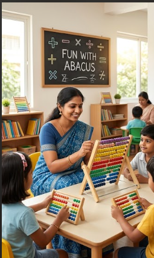

At Create Art Academy, we don't just teach techniques—we cultivate creative thinkers and confident individuals through the transformative power of art.
Founded in 2015, Create Art Academy began with a simple vision: to provide a space where children could explore their creativity without boundaries. What started as a small studio has grown into Chromepet's premier art education center.
We believe art education should develop the whole child—enhancing fine motor skills, boosting confidence, teaching patience, and most importantly, providing a joyful creative outlet.
Our structured yet flexible curriculum adapts to each student's unique abilities while ensuring steady progress in technical skills.

What sets our academy apart is our holistic approach to art education, combining technical mastery with creative exploration.
Our step-by-step curriculum builds skills gradually, ensuring students master fundamentals before advancing to complex techniques.
With a maximum of 8 students per batch, each child receives personalized attention tailored to their learning style.
We emphasize original expression over imitation, helping students develop their unique artistic voice and creative problem-solving skills.
Students regularly prepare portfolio-worthy pieces and participate in exhibitions, building presentation skills and pride in their work.
Our integrated approach connects drawing, painting, and calligraphy, giving students a comprehensive artistic foundation.
Beyond art, we cultivate patience, focus, and attention to detail—qualities that benefit all areas of life and learning.
Our instructors are practicing artists and experienced educators who combine technical expertise with a passion for teaching.

With 15+ years teaching experience, Priya specializes in classical drawing techniques and watercolor painting. BFA from Stella Maris College.

Expert in acrylic and oil techniques. Former gallery artist with exhibitions across South India. MFA from Government College of Fine Arts.

Specialist in modern calligraphy styles and abacus instruction. Trained 500+ students in mental math techniques over 8 years.
Hear from families who have experienced the Create Art Academy difference.
Limited seats available for our upcoming batches. Schedule a trial class to experience our teaching approach firsthand.
Book a Trial Class